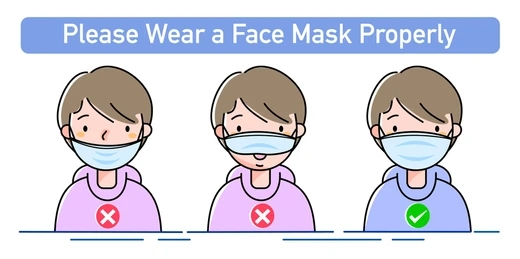
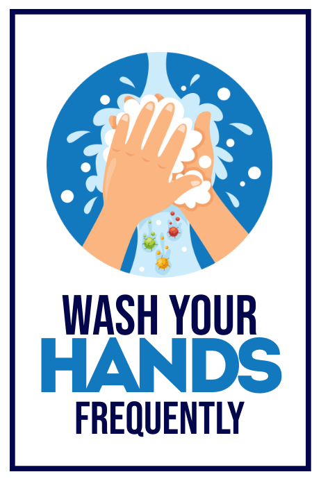

Covid-19 News
Considering travel during the pandemic? Take precautions to protect yourself from COVID-19
A coronavirus disease 2019 (COVID-19) vaccine can prevent you from getting COVID-19 or from becoming seriously ill due to COVID-19. But even if you're vaccinated, it's still a good idea to take precautions to protect yourself and others while traveling during the COVID-19 pandemic.
If you've had all recommended COVID-19 vaccine doses, including boosters, you're less likely to become seriously ill or spread COVID-19.
World Health Organization recommends that you should avoid travel until you've had all recommended COVID-19 vaccine and booster doses.
Before You Travel
- Have you been vaccinated against COVID-19?
- Have you had any booster doses?
- Are you at increased risk for severe illness?
- Do you live with someone who's at increased risk for severe illness?
- Does your home or destination have requirements or restrictions for travelers?
If you haven't, get vaccinated. If the vaccine requires two doses, wait two weeks after getting your second vaccine dose to travel. If the vaccine requires one dose, wait two weeks after getting the vaccine to travel. It takes time for your body to build protection after any vaccination.
Having all recommended COVID-19 vaccine doses, including boosters, increases your protection from serious illness
Anyone can get COVID-19. But older adults and people of any age with certain medical conditions are at increased risk for severe illness from COVID-19.
If you get infected while traveling, you can spread the COVID-19 virus to the people you live with when you return, even if you don't have symptoms.
Even if you've had all recommended vaccine doses, you must follow local, state and federal testing and travel rules.
Check local requirements, restrictions and situations
Some state, local and territorial governments have requirements, such as requiring people to wear masks, get tested, be vaccinated or stay isolated for a period of time after arrival. Before you go, check for requirements at your destination and anywhere you might stop along the way.
Keep in mind these can change often and quickly depending on local conditions. It's also important to understand that the COVID-19 situation, such as the level of spread and presence of variants, varies in each country. Check back for updates as your trip gets closer.
Stay safe when travel
When you reach your destination, continue to take all the precautions to keep yourself and those around you safe from COVID-19.
- Get vaccinated.
- Keep distance between yourself and others (within about 6 feet, or 2 meters) when you're in indoor public spaces if you're not fully vaccinated. This is especially important if you have a higher risk of serious illness.
- Follow COVID-19 guidelines from local authorities when you arrive at stations, ports and airports.
- Avoid crowds and indoor places that have poor air flow (ventilation).
- Don't touch frequently touched surfaces, such as handrails, elevator buttons and kiosks. If you must touch these surfaces, use hand sanitizer or wash your hands afterward.
- Wear a face mask in indoor public spaces. 
- Clean your hands often. Be sure to wash your hands after using the bathroom, before eating, and after coughing, sneezing or blowing your nose. 
- Wash your hands often with soap and water for at least 20 seconds.
- If soap and water aren't available, use a hand sanitizer that contains at least 60% alcohol. Cover all surfaces of your hands and rub your hands together until they feel dry.
- Don't eat or drink on public transportation. That way you can keep your mask on the whole time.

Air travel
Because of the high air flow and air filter efficiency on airplanes, most viruses such as the COVID-19 virus don't spread easily on flights. Wearing masks on planes has likely helped lower the risk of getting the COVID-19 virus on flights too.
However, air travel involves spending time in security lines and airport terminals, which can bring you in close contact with other people. Getting vaccinated and wearing a mask when traveling can help protect you from COVID-19 while traveling.
- Travelers must wear masks during screening.
- Travelers should keep a distance of 6 feet apart from other travelers when possible.
- Each traveler may have one container of hand sanitizer up to 12 ounces (about 350 milliliters) in a carry-on bag. These containers will need to be taken out for screening.
Be sure to wash your hands with soap and water for at least 20 seconds directly before and after going through screening.
Public transportation
If you travel by bus or train and you aren't vaccinated, be aware that sitting or standing within 6 feet (2 meters) of others for a long period can put you at higher risk of getting or spreading COVID-19. Follow the precautions described above for protecting yourself during travel.
Even if you fly, you may need transportation once you arrive at your destination. You can search car rental options and their cleaning policies on the internet. If you plan to stay at a hotel, check into shuttle service availability.
If you'll be using public transportation and you aren't vaccinated, continue physical distancing and wearing a mask after reaching your destination.
Make a packing list
When it's time to pack for your trip, grab any medications you may need on your trip and these essential safe-travel supplies:
- Face masks
- Tissues
- Alcohol-based hand sanitizer (at least 60% alcohol)
- Disinfectant wipes (at least 70% alcohol)
- Thermometer
Healthcare in Malaysia
The government of Malaysia has stated that they are currently covering all costs related to hospitalisation for COVID-19 at assigned government facilities, regardless of nationality. The Malaysian authorities expect patients to follow the formal reporting process in place.
If you have COVID-19 symptoms, you should call +60388810200, +60388810600 or +60388810700 or email cprc@moh.gov.my. After the consultation, you will be informed of the next steps.
If you need medication whilst in country visit a local pharmacy who will be able to give you advice. Pharmacies can be found in shopping centres in Malaysia. If a prescription is required they will give you information about local clinics.